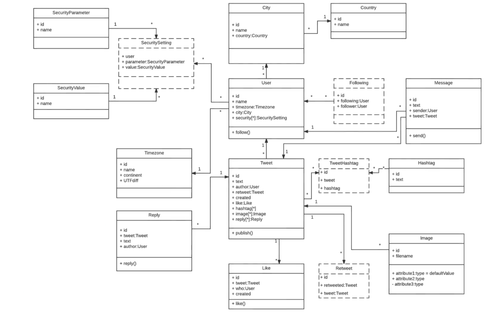
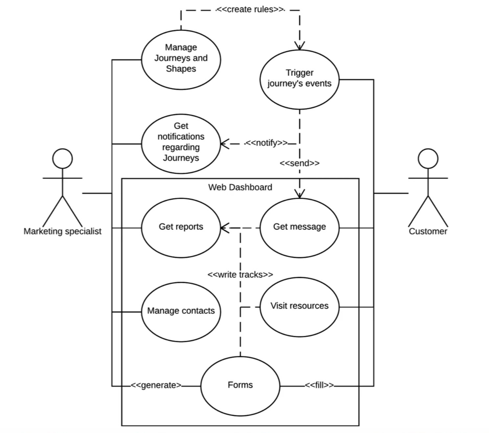
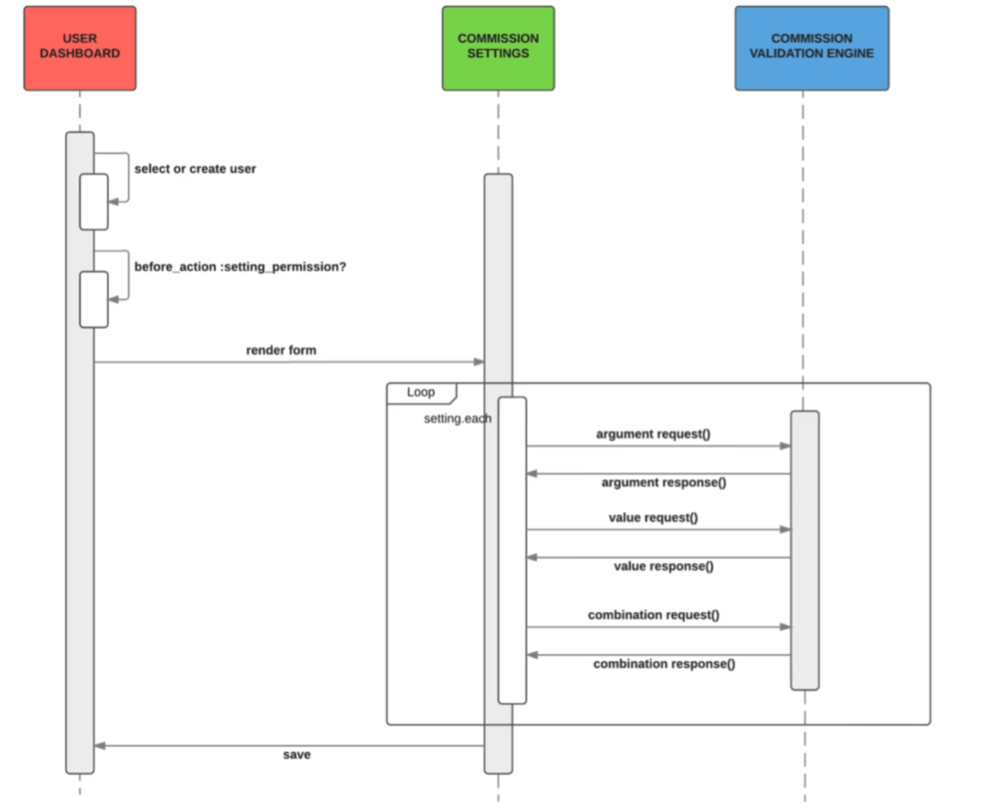
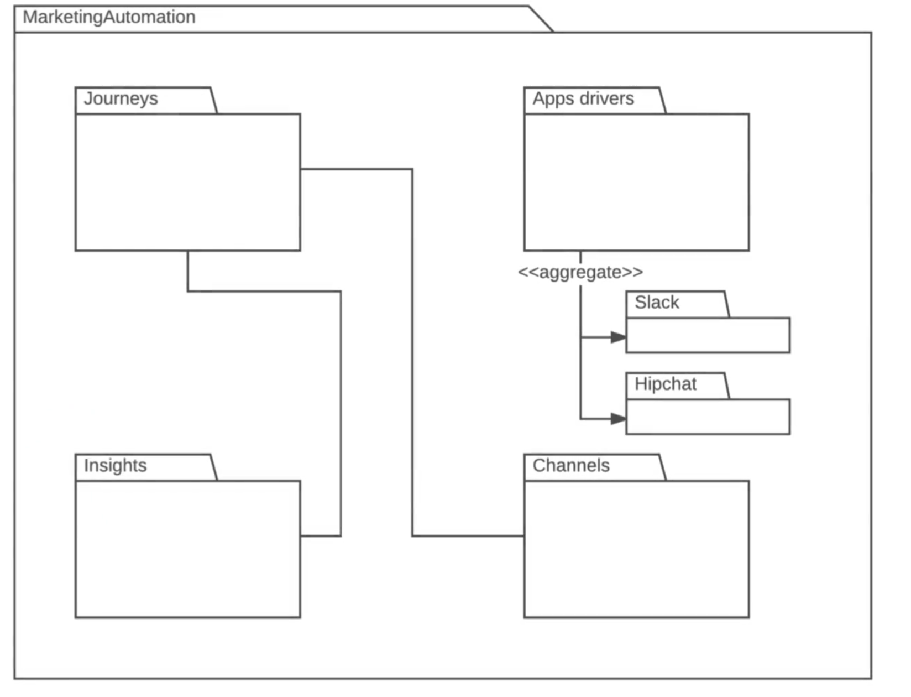

Years ago, and I mean decades ago, there were all kinds of different ideas when it came to how you would model systems visually. You'd have people getting up on whiteboards drawing out all their sight components or software components and state that this piece is going to communicate with this other piece. It made sense to them, however, when they showed it to someone who had not seen their style of modeling, that person would have no idea what to do. If it was given to a developer, the developer many times would be very confused in how they could translate those diagrams into actionable code.
This was a pretty significant problem in the software industry. In 1994 three gentlemen came up with a system to standardize the process of modeling. By 1996 the Unified Modeling Language was born. The three engineers who came up with the concept of UML were Grady Booch, Ivar Jacobson, and James Rumbaugh.
Since being finalized in 1996, the language has gone through a number of updates, just like a regular programming language and it has continually evolved. One thing that's pretty impressive about UML is that the same core concepts that were published in 1996 are still being used today. These will be the same concepts we're going to cover with this course.
UML is "Language Agnostic". That means if I primarily work has a ruby developer building a system, and I want to talk to a Java or Javascript developer (or any other language), it's going to be pretty hard for me to show them code they personally don't work with or understand. What UML would allow me to do in this situation, is create visual models of how systems interact. UML would show how I organize data or build a database, all the way through how messages are sent from one class to another to produce the expected behavior.
Another great reason to use UML is when you're working with non-technical stakeholders on a project. There have been many instances as a freelance consultant or when I worked for large companies and multiple people on the team were not software developers or software engineers, I can't show non-developers a line of code and expect them to understand what it does. Using UML, we can model these systems so non-developers can see what the user behavior is going to be and understand what the system does in order to verify the behavior matches their expectations and requirements of the project.
Whenever you are approached with building an application or adding a new feature to a preexisting application, it might be a little bit of a daunting task that can intimidate developers and lead to procrastination. UML is a nice tool for stepping in and can help you get started because you can develop a plan to visualize your code and be able to model your systems before worrying about the actual code. When we talk about the stages where you can use UML, there is in my mind, a great opportunity before you touch any code to actually start building some diagrams.
If you're a little confused on the functionality you're going to build for an application you might want to start with a visual before you write any code
You may want to start off with building an Activity Diagram which allows you to say what happens at each stage of an application's flow.
You can say a user has the ability to perform one task, then they're going to be asked a question, then based off of that input they're going to have other options. It's a way of being able to break down the flow of an application into very small manageable chunks.

You can say that I want to have a front end MVC be a Javascript-Angular type of application and I want an API that performs certain tasks and I also want to have a database server along with specific types of elements configured on it. You could build out your entire architecture that way.

During development, you can use Class Diagrams to help you model your entire database to see the relationships between tables and to ensure that you're performing best practices such as database normalization, etc. if you build it prior to building the entire system, you'll find that you're going to have a much more organized approach to modeling your databases.
Another diagram I use in the middle of the development process is a Use Case Diagram. Use Case Diagrams are very high level and allow you to organize each of the processes a specific user of the system is allowed to access. When I'm building an authorization system I can check to see the different features that users or that type of user should have access to. By utilizing a Use Case Diagram, it allows me to take a visual approach. It also is something I can use to show non-technical stakeholders to ensure that I'm building the system in the right way.
Lastly, after the entire application has been built, UML can still play a very helpful role. For example: if I have to build in a more advanced feature or refactor something that was built awhile ago, I can use what's called a Sequence Diagram. Sequence Diagrams are able to see all of the messages the system is passing internally to ensure that I'm building my methods in an efficient way and I'm following best practices so I can implement something that'll actually work in the system.
In the final example, we will be using a Package Diagram. After the entire system has been built, there are times where I personally go look at the code base and see how I can organize it be more efficient or I want to decrease the coupling between different modules. I may take out one part of the entire application and turn it into an outside code library. To do that, I can use a Package Diagram to see how I'm organizing the entire code base. That also gives me a very high-level overview for every component in the system and allows me to make sure that I'm conforming to best practices. If I bring a new member to the team, I can show them that Package Diagram and they'll be able to see how the entire system is organized.
